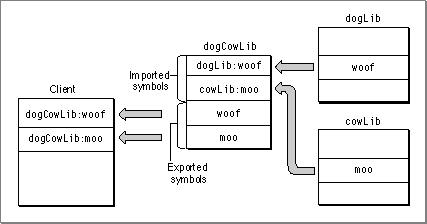
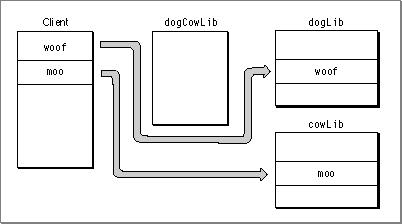

Use Reexport Libraries
A developer can split the functionality of a library into several libraries (for example, to reduce size or to isolate certain services). By using reexport libraries, older clients can use multiple newer libraries in place of an older one.For example, say you have a library
dogCowLibwhich has been split into two librariesdogLibandcowLib. Older clients still expect to import symbols fromdogCowLib, so you must provide one. The new version ofdogCowLibcontains no code, however, but merely imports symbols fromdogLibandcowLiband reexports them as its own. Figure 3-5 shows the use of a reexport library.Figure 3-5 Using a reexport library

When the Code Fragment Manager performs relocations,
dogCowLibis optimized out, with the result that symbol pointers point directly todogLiborcowLib. Figure 3-6 shows the old client linked to the new libraries at runtime.Figure 3-6 The reexport library removed at runtime

More generally, a developer can use reexport libraries to link against a collection of libraries that do not exist as real implementations. For example, you can group symbols in arbitrary libraries according to functionality during the build process and then use a reexport library at runtime to assign these symbols to the actual implementation libraries.
A drawback to using reexport libraries is that the client application receives all the connections associated with a reexport library even if they are not needed. In Figure 3-5, for example, even if the client application does not need any symbols in
dogLib, the Code Fragment Manager prepares it anyway, sincedogCowLibrequires it.